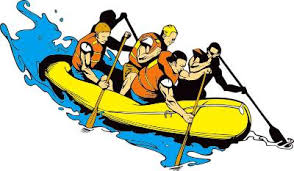

My Experience
Rafting down the Middle Ocoee River has been one of the most memorable and enjoyable experiences of my life. It is a terrifying journey but at the same time a refreshing ordeal. Rafting is risky because there are a lot of safety precautions to take account for due to the rapids being levels three and four. Some safety requirements include a helmet, a paddle, a lifejacket, and closed toed shoes. You never know what might happen on these rivers but that is what makes it daring. Another aspect of it is that is truly is a fun time and an enjoyable experience. I got to admire nature rafting down five miles of rapids. In addition, it can get hot out there on the water so when you get splashed or accidentally thrown in it will feel refreshing and feel like an outdoor water ride. It is very strenuous at the same time because it will feel like a workout due to paddling for hours. Rafting also taught me a lot of team building values because you must work together as a raft to efficiently get down the river.
History
The Ocoee River is a river located in Tennessee that is surrounded by the Appalachian Mountains. The Cherokee Indians were the Indians that lived around the Ocoee River. There are different names for different parts of the river and they are the Ocoee, Toccoa, and Moniker. These names come from the Cherokee Indians. Then power companies started taking advantage of the Ocoee River by using dams to extract power by using hydroelectricity. Then not long after outdoor enthusiast started to come out to ride the rapids which included competitive rafting, kayaking, and other water sports. This attraction allowed Georgia to have the honor of hosting the 1996 Summer Olympics.
Directions
If you were to drive to Ocoee, TN starting from the University of Georgia it would take approximately two and a half hours. The bulk of the directions are indicated above and it is an easy drive. Two and a half hours may sound like a lot of time but truly it is worth it not only to go rafting but the scenery on the way up is incredible.